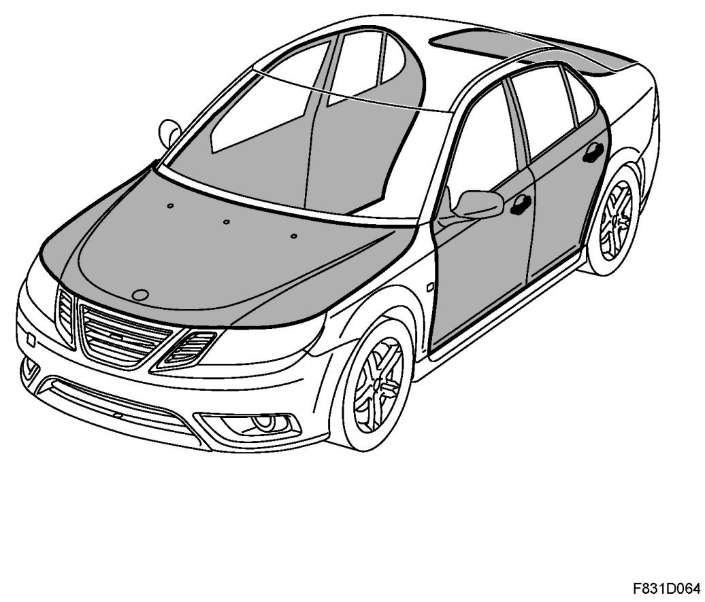

Fuel Door: Description and Operation
Bonnet, Doors And Locks, Brief Description

Bonnet
The bonnet is manufactured of aluminium.
The bonnet locking mechanism consists of two spring locks, which are placed in the upper radiator member and are operated via wires from the control located in the compartment. When the bonnet lock is released, the front edge of the bonnet is raised and the bonnet is opened by releasing a catch.
The bonnet is equipped with a lifting spring of the gas cartridge type that keeps the bonnet in the open position. The hinges, which are single jointed and lubrication free, are fixed to the body and bonnet in a way that allows the possibility of adjustment.
Doors
The hinge brackets are bolted to the door and body. The door is manufactured of steel where the hinge joints on the front and rear doors are lubrication free.
Boot lid
The boot lid has two hinges that are secured to the parcel shelf and boot lid. The lift springs are mechanical and adjustable depending on the weight of boot lid, for example, when fitting a spoiler.
Tailgate
The tailgate has two gas cartridge lifting springs. The gas cartridges are located on both sides of the tailgate aperture between the roof and the headlining.